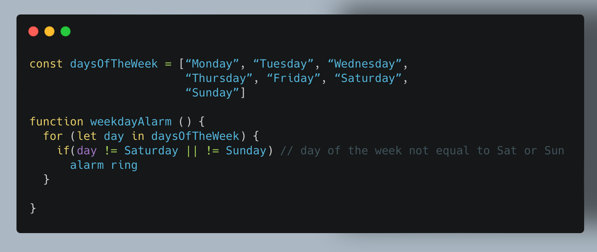
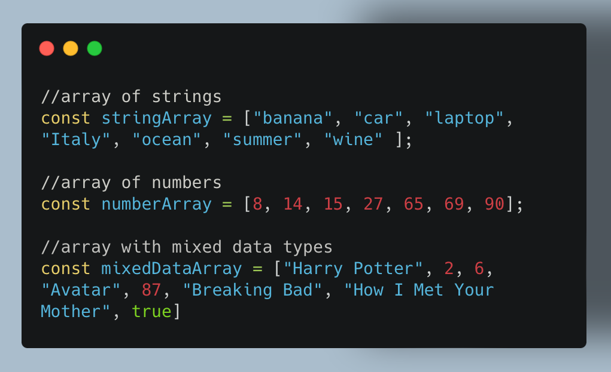
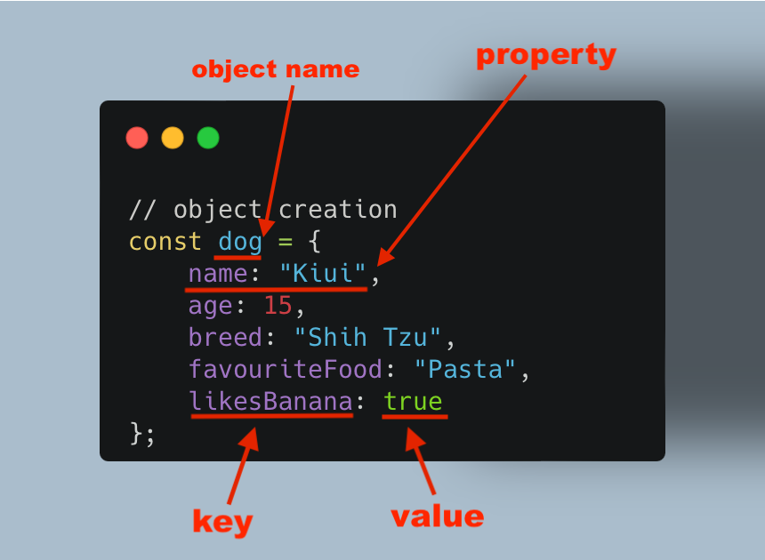

"Imagine this: you have the TV on but you don't like
the show that's being streamed, and you want to change channel.
How can you do that?
There has to be a way for you to interact with your television. And what do you use to do that?
A remote.
The remote serves as the bridge which allows you interact with your television.
You make the TV active and dynamic via the remote.
And in the same way, JavaScript makes the HTML page active and dynamic via the DOM."
JS Fundamentals
Sprint 3 | Tech
What is JavaScript?
Javascript is a programming language that is used by programmers across the world to create dynamic and interactive web content like apps, games and browsers.
JavaScript makes web pages dynamic. Before JavaScript, web pages were built only with HTML and CSS and those two together are only capable of creating static pages. Yes, you can style with CSS but there is no interactivity.
As of 2022 JavaScript is the most commonly-used language in the world, and it's no surprise that some of the most popular websites are built with JavaScript, including Google, YouTube, and Facebook.
An analogy to describe JavaScript and its relationship to HTML and CSS.
In my previous reflections I compared a website to a house. HTML is like the structural elements of a house, the starting point. CSS is anything to do with the styling and design of the house, like painting it and adding furniture. JavaScript is adding interactivity, and that would be adding electricity and heating to the house.
Another analogy that I love and it’s often used online is that if we were to compare HTML, CSS and JavaScript to real-life jobs, then HTML would be a builder, CSS an artist and JavaScript would definitely be a magician because it is responsible of creating action in a website .

Explain control flow and loops.
In computer programming, control flow is the order in which the code gets executed by the computer. The code generally runs line by line from top to bottom, unless the computer hits any statement or structure that changes the control flow, such as functions, conditionals or loops.
Loops are a conditional statement that repeats the given task until the given condition is met. This means that a loop will keep running until there is either nothing left to loop over, or if the condition becomes false. Loops are also known as iteration statements.
There many types of loops in JavaScript but the main commons are:
- For
- While
- forEach
- For of
The for loop is one of the most commonly used loop structures in most programming languages, not just JavaScript.
When you first start coding loops are very intimidating but you will be surprised to know that your everyday life is full of loops too!
For example: let’s say that you work Monday to Friday and you have to be in the office at 8.30am on those days. As a consequence you set up your alarm to ring every weekday at 7am. Every morning your alarm check which day of the week it is, and if it’s any day between Monday to Friday, then it will go off, otherwise (Saturday or Sunday) it won’t ring.
If we translate this into JavaScript, your code will look something like this:
What is the DOM?
To explain in simple English what the DOM is I am going to borrow an analogy from FreeCodeCamp.
...
...
DOM stands for Document Object Model. It is a programming interface that allows us to create, change, or remove elements from the document. We can also add events to these elements to make our page more dynamic.
The DOM views an HTML document as a tree of nodes. A node represents an HTML element. We can access these elements in the document and make changes to them using JavaScript.
For example we can use the syntax document.querySelectorAll("p");
to return a list of all the paragraph elements ("p") in the document:
Array vs. Objects
Arrays and objects are two ways of collecting data into a group. Let's try to understand what is the difference between the two and when you should use one rather than the other.
An array is an ordered collection of data and arrays are used to store a list of multiple values in a single variable. Each of those value is called an element and every element has a number attached to it, called a numeric index, that allows us to access it. In JavaScript, arrays start at index zero and array can be manipulated with various methods.
An array can hold values of mixed types, this means you can have an array that stores elements with the types number, string, boolean, and even more arrays.
This is what different types of array look like:

We can access the data inside arrays by their numerical position in the list, aka index.
Don't forget that arrays use zero-based indexing,
so the first element in an array is element [0].
If we take the stringArray from above, "banana"
is the first element and we can access it using index [0], "car"
is the second element and has an index of [1],
and so on. It might sounds strange and confusing at first, but don't worry,
you'll get used to it!
Let's say we want to access the seventh element, which is "wine", our code will look like this:
Same as arrays, objects represent a data type that is mutable and can be used to store a collection of data.
Objects are used to represent a “thing” in your code. That could be a person,
a dog, a book, a house - basically anything that can be defined by a set of characteristics.
In objects, these characteristics are called properties that consist of a
key and a value pair, stored within curly brackets { }.
Each key acts as a label for the corresponding value.
This is what an object look like:
Properties in objects can be accessed, added, changed, and removed by using either dot or bracket notation.
If we take the dog object from above, to get the value of the breed key in our dog object
with both dot and bracket notation, our code will look like:
Functions?
A function is a piece of code that if needed can be used multiple times in a program. When developing an application, you often need to perform the same action over and over, and to avoid repeating the same code multiple times, you can use a function to wrap that code and reuse it as many times you need.
A function is declared using the function keyword and
to use it you need to call it. Calling a function is also known as invoking a function.
To call a function, you use its name followed by arguments enclosing in parentheses.
The syntax of a function looks like this:
The terms parameters and arguments are often used interchangeably. However, they are essentially different. When declaring a function, you specify the parameters, while when calling a function, you pass the arguments that are corresponding to the parameters.
I find the function concept very similar to adding a new phone number to our contact list (this will be the act of creating the function). E.g. Every time I want to call my mum, instead of keying her number, I type mum from my contact list - in programming lingo this is equal to calling the function mum( ).
Resources:
https://www.lighthouselabs.ca/en/blog/what-is-javascript-used-for
https://www.computerhope.com/jargon/c/contflow.htm
https://codeinstitute.net/global/blog/control-flow-in-javascript/
https://medium.com/@rianna.cleary/control-flow-in-javascript-9c63d0c98bb9
https://developer.mozilla.org/en-US/docs/Glossary/Control_flow
https://www.educative.io/answers/what-is-dom
https://developer.mozilla.org/en-US/docs/Web/API/Document_Object_Model/Introduction
https://developer.mozilla.org/en-US/docs/Glossary/Array
https://www.javascripttutorial.net/javascript-array/
https://medium.com/@zac_heisey/objects-vs-arrays-42601ff79421